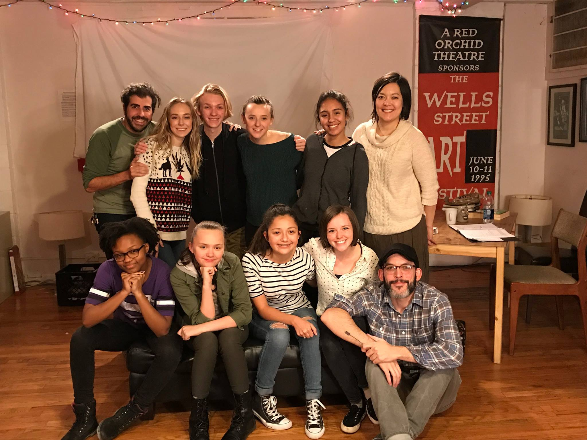
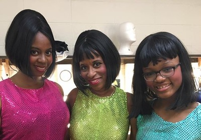

Theatre Experience
Haven Place 2016

Haven Place was a show I did in the winter of 16-17 at A Red Orchid Theatre. Haven Place was particularly unique because the show was an inclusionary one; in the HP cast was a deaf character played by a deaf actor. Due to the aforementioned
all of the actors signed all of their lines in order to include both the deaf character and the deaf consumers.
Seussical 2016

I did a show in the Summer/Fall of 2016 called Seussical the Musical. In the aforementioned production I was the mezzo-soprano bird girl.